Candidate List 20260808Last night — ZTF: 3,772 passed basic cuts (282 young) · LSST: 0 passed basic cuts (0 young)Previous Day Next Day
Section 1: New Sources (age<1d) Section 2: Old (1-5d) sources observed last nightplaceholder
Section 1: New Afterglow/FBOT Cands Last Night (5)
1. [ZTF] ZTF26abmltgh (Afterglow?FBOT?) [Back to Top] [Share] [Trigger Swift] [Fritz Alert] [Fritz Source] [Lasair]RA, Dec: 268.50548, 38.47928 17h54m1.31s, 38d28m45.40sGalactic (l, b): 64.46152, 27.15833 ext(g-r) = 0.029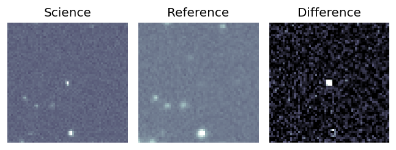
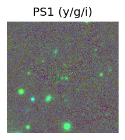
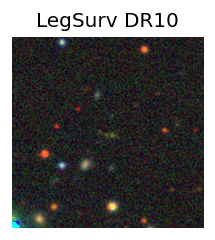
TESS: Sectors [ 25 26 40 52 53 79 80 117 118 119]
SDSS (<15 kpc):Found SDSS phot-z: z=0.84; peak abs mag = -24.69
PS1: 0 sources in 3 arcsec
LegacySurvey: 1 sources in 3 arcsec Closest: d = 1.20 arcsec, 158.8 deg (east of north) photoz=0.63 (68% bounds 0.48, 0.8), type=REX peak abs mag (ext. corrected) = -23.94 (68% bounds -23.22, -24.56)
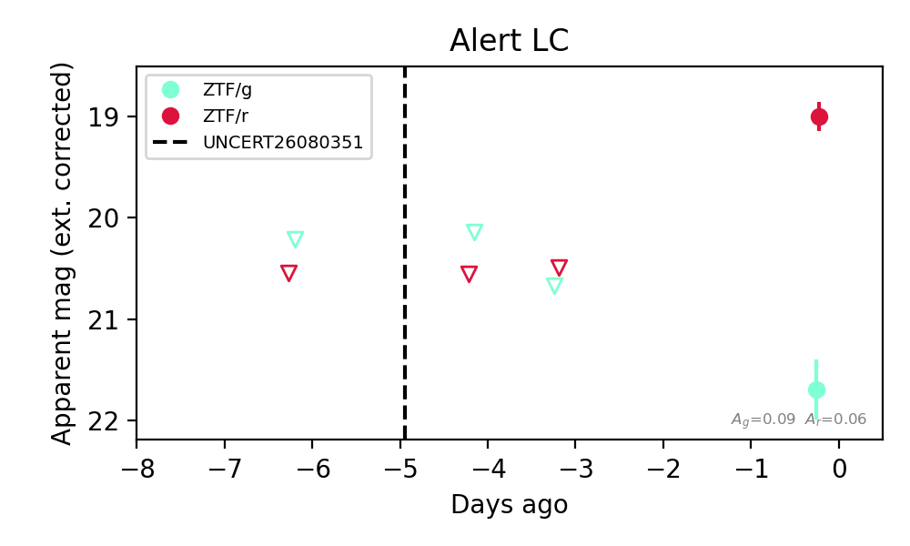
Extinction-corrected gr color:
From alerts: 2.7 +/- 0.33 mag
Consistent with synchrotron, g-r>0!
Rise Rate:
r: 0.5 mag/day
Fade Rate:
2. [ZTF] ZTF26abmmcgc (Afterglow?) [Back to Top] [Share] [Trigger Swift] [Fritz Alert] [Fritz Source] [Lasair]RA, Dec: 296.936, 46.6607 19h47m44.64s, 46d39m38.51sGalactic (l, b): 80.31033, 10.54905 ext(g-r) = 0.147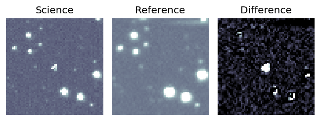
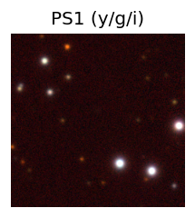

TESS: Sectors [ 14 15 41 54 74 75 81 82 119 120 121]
PS1: 0 sources in 3 arcsec
LegacySurvey: 0 sources in 3 arcsec
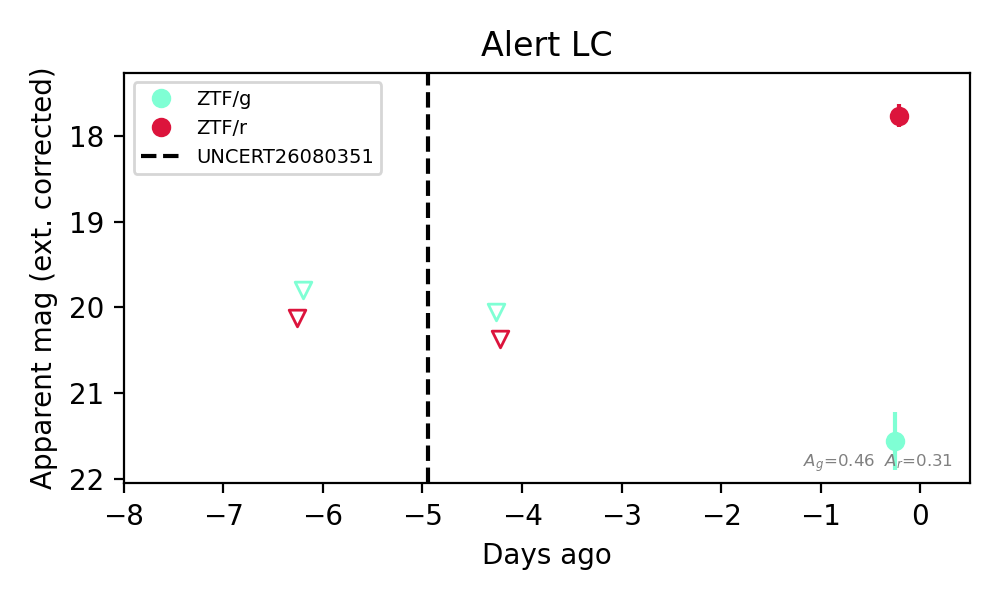
Extinction-corrected gr color:
From alerts: 3.79 +/- 0.37 mag
Consistent with synchrotron, g-r>0!
Rise Rate:
r: 0.65 mag/day
Fade Rate:
3. [ZTF] ZTF26abmntrx (Afterglow?) [Back to Top] [Share] [Trigger Swift] [Fritz Alert] [Fritz Source] [Lasair]RA, Dec: 269.22016, 3.84595 17h56m52.84s, 3d50m45.41sGalactic (l, b): 30.12214, 13.88532 ext(g-r) = 0.188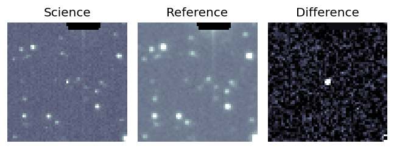
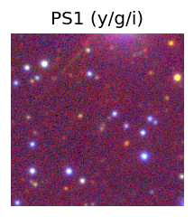

TESS: Sectors [ 80 118]
PS1: 1 source in 3 arcsec Closest: d = 3.69 arcsec photoz=0.56+/-0.21 peak abs mag = -24.03
LegacySurvey: 0 sources in 3 arcsec
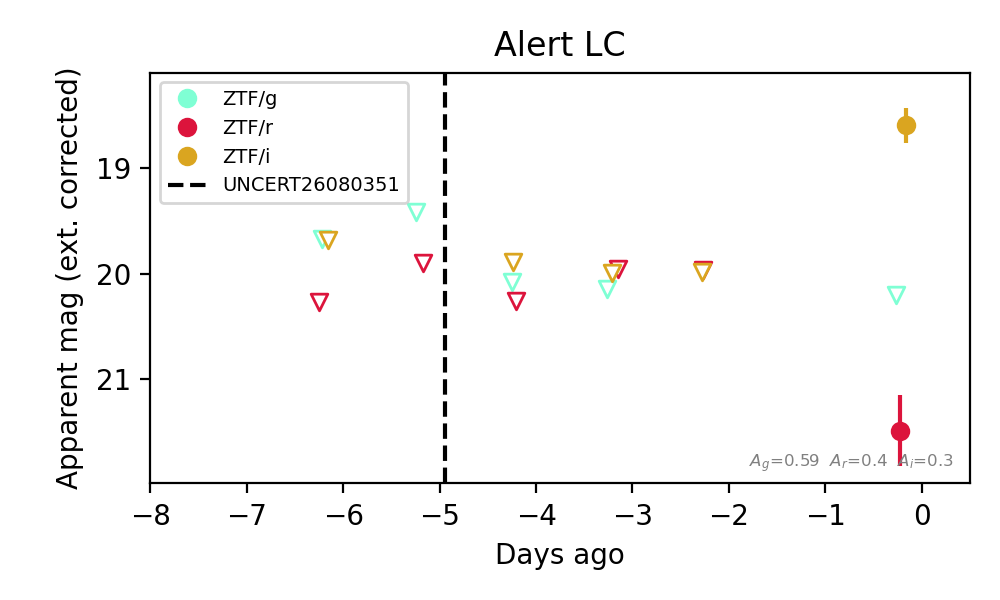
Extinction-corrected gr color:
From alerts: -1.28 +/- 99 mag
Extinction-corrected gi color:
From alerts: 1.61 +/- 99 mag
Extinction-corrected ri color:
From alerts: 2.89 +/- 0.38 mag
Consistent with synchrotron, g-r>0!
Rise Rate:
i: 0.66 mag/day
Fade Rate:
4. [ZTF] ZTF26abmnvrn (Afterglow?) [Back to Top] [Share] [Trigger Swift] [Fritz Alert] [Fritz Source] [Lasair]RA, Dec: 289.79104, 1.78964 19h19m9.85s, 1d47m22.71sGalactic (l, b): 37.70207, -5.34279 ext(g-r) = 0.589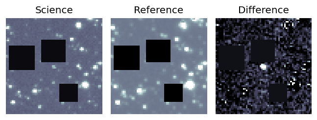
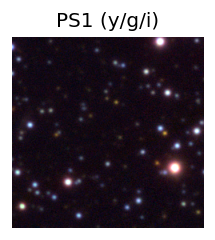

TESS: Sectors [54 80 81]
PS1: 0 sources in 3 arcsec
LegacySurvey: 0 sources in 3 arcsec
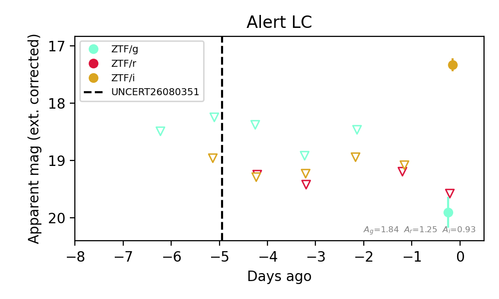
Extinction-corrected gr color:
From alerts: 0.33 +/- 99 mag
Extinction-corrected gi color:
From alerts: 2.57 +/- 0.29 mag
Extinction-corrected ri color:
From alerts: 2.23 +/- 99 mag
Consistent with synchrotron, g-r>0!
Rise Rate:
i: 1.74 mag/day
Fade Rate:
5. [ZTF] ZTF26abmnwxn (Afterglow?) [Back to Top] [Share] [Trigger Swift] [Fritz Alert] [Fritz Source] [Lasair]RA, Dec: 272.74402, -5.9728 18h10m58.57s, -5d-58m-22.07sGalactic (l, b): 22.95373, 6.20085 ext(g-r) = 1.328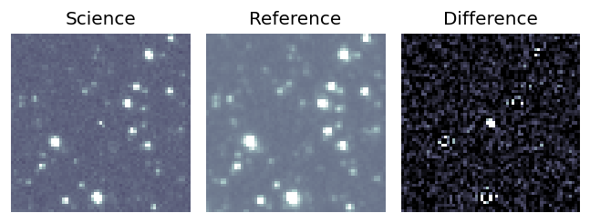
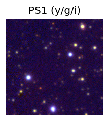

TESS: Sectors [ 80 118]
PS1: 1 source in 3 arcsec Closest: d = 1.54 arcsec photoz=0.33+/-0.36 peak abs mag = -24.56
LegacySurvey: 0 sources in 3 arcsec
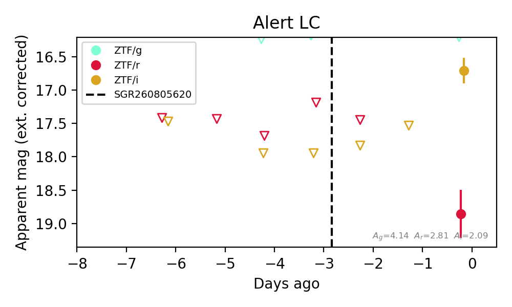
Extinction-corrected gr color:
From alerts: -2.65 +/- 99 mag
Extinction-corrected gi color:
From alerts: -0.51 +/- 99 mag
Extinction-corrected ri color:
From alerts: 2.15 +/- 0.41 mag
Consistent with synchrotron, g-r>0!
Rise Rate:
i: 0.73 mag/day
Fade Rate:
Section 2: Older Sources Observed Last Night (28)
0. [ZTF] ZTF26abljqps (Afterglow?) [Back to Top] [Share] [Trigger Swift] [Fritz Alert] [Fritz Source] [Lasair]RA, Dec: 282.6902, -10.97754 18h50m45.65s, -10d-58m-39.16sGalactic (l, b): 23.06228, -4.83285 ext(g-r) = 0.479


TESS: Sectors [80 92]
PS1: 1 source in 3 arcsec Closest: d = 1.12 arcsec photoz=0.83+/-0.09 peak abs mag = -26.90
LegacySurvey: 0 sources in 3 arcsec

Extinction-corrected gr color:
From alerts: -0.39 +/- 0.09 mag
Extinction-corrected gi color:
From alerts: -0.7 +/- 0.13 mag
Rise Rate:
g: 2.27 mag/day
r: 2.09 mag/day
i: 0.1 mag/day
Fade Rate:
g: 0.23 mag/day
1. [ZTF] ZTF26ablkwfo (Afterglow?) [Back to Top] [Share] [Trigger Swift] [Fritz Alert] [Fritz Source] [Lasair]RA, Dec: 269.78882, -8.71753 17h59m9.32s, -8d-43m-3.10sGalactic (l, b): 19.11374, 7.4602 ext(g-r) = 1.252


TESS: Sectors [ 80 118]
PS1: 1 source in 3 arcsec Closest: d = 2.44 arcsec photoz=0.92+/-0.08 peak abs mag = -27.90
LegacySurvey: 0 sources in 3 arcsec

Extinction-corrected gr color:
From alerts: -0.53 +/- 0.12 mag
Extinction-corrected gi color:
From alerts: -0.66 +/- 0.12 mag
Extinction-corrected ri color:
From alerts: -0.18 +/- 0.11 mag
Rise Rate:
g: 0.33 mag/day
r: 1.53 mag/day
i: 0.68 mag/day
Fade Rate:
g: 0.23 mag/day
r: 0.32 mag/day
i: 0.3 mag/day
2. [ZTF] ZTF26ablpqzw (FBOT?) [Back to Top] [Share] [Trigger Swift] [Fritz Alert] [Fritz Source] [Lasair]RA, Dec: 227.72978, 13.34022 15h10m55.15s, 13d20m24.79sGalactic (l, b): 17.01262, 54.65635 ext(g-r) = 0.04


TESS: Sectors 51
SDSS (<15 kpc):Found SDSS phot-z: z=0.16; peak abs mag = -20.34
PS1: 0 sources in 3 arcsec
LegacySurvey: 1 sources in 3 arcsec Closest: d = 0.27 arcsec, 228.1 deg (east of north) photoz=0.15 (68% bounds 0.13, 0.17), type=SER peak abs mag (ext. corrected) = -20.2 (68% bounds -19.86, -20.48)

Extinction-corrected gr color:
From alerts: 0.39 +/- 0.23 mag
Extinction-corrected gi color:
From alerts: 0.27 +/- 0.23 mag
Extinction-corrected ri color:
From alerts: -0.24 +/- 0.3 mag
Consistent with synchrotron, g-r>0!
Rise Rate:
g: 0.17 mag/day
r: 0.2 mag/day
i: 0.22 mag/day
Fade Rate:
3. [ZTF] ZTF26ablrygn (Afterglow?) [Back to Top] [Share] [Trigger Swift] [Fritz Alert] [Fritz Source] [Lasair]RA, Dec: 327.96568, 41.81727 21h51m51.76s, 41d49m2.15sGalactic (l, b): 90.69655, -9.54674 ext(g-r) = 0.373


TESS: Sectors [ 15 16 56 83 121]
PS1: 0 sources in 3 arcsec
LegacySurvey: 0 sources in 3 arcsec

Extinction-corrected gr color:
From alerts: -0.07 +/- 0.12 mag
Consistent with synchrotron, g-r>0!
Rise Rate:
g: 0.72 mag/day
r: 2.02 mag/day
Fade Rate:
r: 0.19 mag/day
4. [ZTF] ZTF26abmabrc (FBOT?) [Back to Top] [Share] [Trigger Swift] [Fritz Alert] [Fritz Source] [Lasair]RA, Dec: 25.64318, -2.82362 1h42m34.36s, -2d-49m-25.04sGalactic (l, b): 151.83473, -62.78994 ext(g-r) = 0.024


TESS: Sectors [ 3 30 70 97 108]
PS1: 0 sources in 3 arcsec
LegacySurvey: 1 sources in 3 arcsec Closest: d = 0.28 arcsec, 163.5 deg (east of north) photoz=0.39 (68% bounds 0.15, 0.94), type=EXP peak abs mag (ext. corrected) = -23.56 (68% bounds -21.29, -25.89)

Extinction-corrected gr color:
From alerts: -0.32 +/- 0.11 mag
Extinction-corrected gi color:
From alerts: -0.6 +/- 0.21 mag
Extinction-corrected ri color:
From alerts: -0.42 +/- 0.2 mag
Rise Rate:
g: 0.24 mag/day
r: 0.16 mag/day
i: 0.08 mag/day
Fade Rate:
5. [ZTF] ZTF26ablxqyx (Afterglow?) [Back to Top] [Share] [Trigger Swift] [Fritz Alert] [Fritz Source] [Lasair]RA, Dec: 262.52251, 13.78863 17h30m5.40s, 13d47m19.06sGalactic (l, b): 36.58968, 24.1466 ext(g-r) = 0.121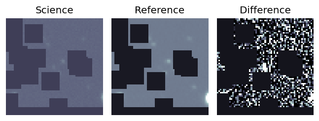
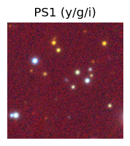
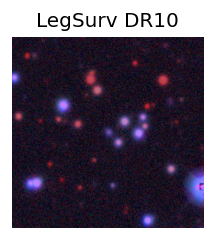
TESS: Sectors [ 26 52 53 79 118]
PS1: 0 sources in 3 arcsec
LegacySurvey: 1 sources in 3 arcsec Closest: d = 0.36 arcsec, 251.9 deg (east of north) photoz=0.08 (68% bounds 0.06, 0.1), type=REX peak abs mag (ext. corrected) = -18.78 (68% bounds -18.02, -19.38)
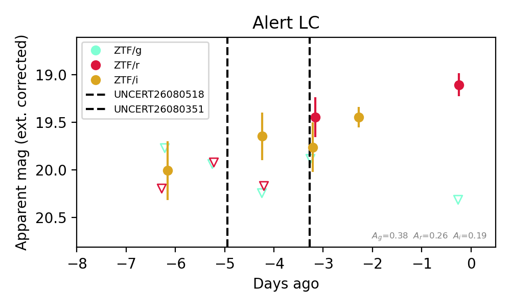
Extinction-corrected gr color:
From alerts: 1.21 +/- 99 mag
Extinction-corrected gi color:
From alerts: 0.12 +/- 99 mag
Extinction-corrected ri color:
From alerts: -0.32 +/- 0.33 mag
Consistent with synchrotron, g-r>0!
Rise Rate:
r: 0.68 mag/day
i: 0.02 mag/day
Fade Rate:
6. [ZTF] ZTF26abmiytv (FBOT?) [Back to Top] [Share] [Trigger Swift] [Fritz Alert] [Fritz Source] [Lasair]RA, Dec: 335.61246, -2.88679 22h22m26.99s, -2d-53m-12.46sGalactic (l, b): 60.65674, -46.9305 ext(g-r) = 0.071


TESS: Sectors [42 55 92]
SDSS (<15 kpc):Found SDSS phot-z: z=0.02; peak abs mag = -15.76
PS1: 0 sources in 3 arcsec
LegacySurvey: 1 sources in 3 arcsec Closest: d = 2.42 arcsec, 252.8 deg (east of north) photoz=0.17 (68% bounds 0.14, 0.22), type=SER peak abs mag (ext. corrected) = -20.37 (68% bounds -19.92, -20.95)

Extinction-corrected gr color:
From alerts: -0.05 +/- 0.33 mag
Extinction-corrected gi color:
From alerts: -0.32 +/- 0.18 mag
Extinction-corrected ri color:
From alerts: -0.52 +/- 0.25 mag
Consistent with synchrotron, g-r>0!
Rise Rate:
g: 0.38 mag/day
r: 0.44 mag/day
i: 0.35 mag/day
Fade Rate:
7. [ZTF] ZTF26abmjviv (Afterglow?) [Back to Top] [Share] [Trigger Swift] [Fritz Alert] [Fritz Source] [Lasair]RA, Dec: 344.66258, 35.90372 22h58m39.02s, 35d54m13.38sGalactic (l, b): 98.62628, -21.58888 ext(g-r) = 0.099


TESS: Sectors [16 56 83]
PS1: 1 source in 3 arcsec Closest: d = 7.02 arcsec photoz=0.73+/-0.20 peak abs mag = -25.91
LegacySurvey: 0 sources in 3 arcsec

Extinction-corrected gr color:
From alerts: 2.02 +/- 99 mag
Rise Rate:
r: 0.44 mag/day
Fade Rate:
r: 0.79 mag/day
8. [ZTF] ZTF26abmjwyw (Afterglow?) [Back to Top] [Share] [Trigger Swift] [Fritz Alert] [Fritz Source] [Lasair]RA, Dec: 351.53461, 3.31473 23h26m8.31s, 3d18m53.03sGalactic (l, b): 85.57074, -53.25456 ext(g-r) = 0.077


TESS: Sectors [42 70 92]
PS1: 0 sources in 3 arcsec
LegacySurvey: 1 sources in 3 arcsec Closest: d = 8.47 arcsec, 218.7 deg (east of north) photoz=0.78 (68% bounds 0.57, 1.04), type=PSF peak abs mag (ext. corrected) = -25.53 (68% bounds -24.71, -26.32)

Extinction-corrected gr color:
From alerts: 1.55 +/- 99 mag
Extinction-corrected ri color:
From alerts: -1.67 +/- 99 mag
Rise Rate:
r: 1.83 mag/day
Fade Rate:
r: 0.81 mag/day
9. [ZTF] ZTF26abmkfmi (FBOT?) [Back to Top] [Share] [Trigger Swift] [Fritz Alert] [Fritz Source] [Lasair]RA, Dec: 345.53178, 59.28356 23h 2m7.63s, 59d17m0.82sGalactic (l, b): 109.36923, -0.67895 ext(g-r) = 1.567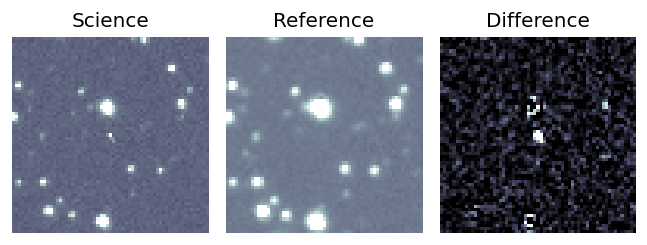
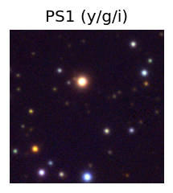

TESS: Sectors [17 24 57 77 84 85]
SDSS (<15 kpc):Found SDSS phot-z: z=0.03; peak abs mag = -20.12
PS1: 1 source in 3 arcsec Closest: d = 0.81 arcsec photoz=1.26+/-0.20 peak abs mag = -28.92
LegacySurvey: 0 sources in 3 arcsec
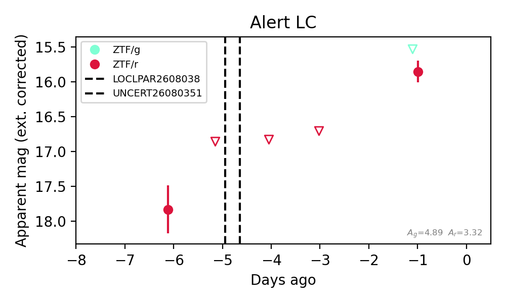
Extinction-corrected gr color:
From alerts: -0.32 +/- 99 mag
Rise Rate:
r: 0.42 mag/day
Fade Rate:
10. [ZTF] ZTF26abmkiau (FBOT?) [Back to Top] [Share] [Trigger Swift] [Fritz Alert] [Fritz Source] [Lasair]RA, Dec: 208.4206, 10.30593 13h53m40.94s, 10d18m21.36sGalactic (l, b): 346.96923, 67.68502 ext(g-r) = 0.034


TESS: Sectors [23 50]
SDSS (<15 kpc):Found SDSS phot-z: z=0.40; peak abs mag = -22.26
PS1: 0 sources in 3 arcsec
LegacySurvey: 1 sources in 3 arcsec Closest: d = 0.35 arcsec, 87.0 deg (east of north) photoz=0.52 (68% bounds 0.34, 0.72), type=REX peak abs mag (ext. corrected) = -22.94 (68% bounds -21.86, -23.79)

Extinction-corrected ri color:
From alerts: -0.04 +/- 0.26 mag
Consistent with synchrotron, g-r>0!
Rise Rate:
r: 0.26 mag/day
Fade Rate:
11. [ZTF] ZTF26abmktcy (FBOT?) [Back to Top] [Share] [Trigger Swift] [Fritz Alert] [Fritz Source] [Lasair]RA, Dec: 240.3263, 22.54311 16h 1m18.31s, 22d32m35.21sGalactic (l, b): 37.6778, 46.92753 ext(g-r) = 0.06


TESS: Sectors [ 24 25 51 78 117]
SDSS (<15 kpc):Found SDSS phot-z: z=0.20; peak abs mag = -20.70
PS1: 0 sources in 3 arcsec
LegacySurvey: 1 sources in 3 arcsec Closest: d = 3.03 arcsec, 78.6 deg (east of north) photoz=0.09 (68% bounds 0.06, 0.12), type=EXP peak abs mag (ext. corrected) = -18.89 (68% bounds -17.74, -19.55)

Extinction-corrected gr color:
From alerts: -0.13 +/- 0.19 mag
Consistent with synchrotron, g-r>0!
Rise Rate:
g: 0.35 mag/day
r: 0.27 mag/day
Fade Rate:
12. [ZTF] ZTF26abmkypv (FBOT?) [Back to Top] [Share] [Trigger Swift] [Fritz Alert] [Fritz Source] [Lasair]RA, Dec: 272.94918, -20.43084 18h11m47.80s, -20d-25m-51.01sGalactic (l, b): 10.33401, -0.89593 WARNING: 2.98 deg from ecliptic plane ext(g-r) = 9.13


TESS: Sectors [ 91 92 116]
PS1: 1 source in 3 arcsec Closest: d = 2.18 arcsec photoz=0.22+/-0.08 peak abs mag = -52.16
LegacySurvey: 0 sources in 3 arcsec

Extinction-corrected gi color:
From alerts: -13.92 +/- 99 mag
Extinction-corrected ri color:
From alerts: -4.9 +/- 99 mag
Rise Rate:
g: 1.62 mag/day
Fade Rate:
13. [ZTF] ZTF26abmlafy (FBOT?) [Back to Top] [Share] [Trigger Swift] [Fritz Alert] [Fritz Source] [Lasair]RA, Dec: 265.52485, 65.65545 17h42m5.97s, 65d39m19.61sGalactic (l, b): 95.39902, 31.6514 ext(g-r) = 0.054


TESS: Sectors [ 14 15 16 18 19 21 22 23 24 25 26 40 41 48 49 51 52 53
55 57 59 60 73 74 75 76 77 78 79 80 81 82 84 85 117 118
119 120 121]
SDSS (<15 kpc):Found SDSS phot-z: z=0.15; peak abs mag = -19.52
NED host (10 arcsec):Found DESI J265.5243+65.6573 (G, 6.7″); NED spec-z: z=1.1467 [zflag SLS]; peak abs mag = -24.67
DESI (10 arcsec):Found DESI spec-z: z=1.15; peak abs mag = -24.67
PS1: 0 sources in 3 arcsec
LegacySurvey: 1 sources in 3 arcsec Closest: d = 0.52 arcsec, 36.4 deg (east of north) photoz=0.11 (68% bounds 0.08, 0.14), type=EXP peak abs mag (ext. corrected) = -18.76 (68% bounds -17.89, -19.29)

Extinction-corrected gr color:
From alerts: -0.8 +/- 0.37 mag
Rise Rate:
g: 24.89 mag/day
Fade Rate:
14. [ZTF] ZTF26abmlaln (FBOT?) [Back to Top] [Share] [Trigger Swift] [Fritz Alert] [Fritz Source] [Lasair]RA, Dec: 264.34506, 44.65408 17h37m22.82s, 44d39m14.67sGalactic (l, b): 70.69335, 31.43392 ext(g-r) = 0.024


TESS: Sectors [ 25 26 40 52 53 78 79 80 117 118]
SDSS (<15 kpc):Found SDSS phot-z: z=0.16; peak abs mag = -19.64
PS1: 0 sources in 3 arcsec
LegacySurvey: 1 sources in 3 arcsec Closest: d = 0.47 arcsec, 9.5 deg (east of north) photoz=0.09 (68% bounds 0.05, 0.13), type=EXP peak abs mag (ext. corrected) = -18.42 (68% bounds -16.99, -19.11)

Extinction-corrected gr color:
From alerts: -0.38 +/- 0.23 mag
Rise Rate:
g: 0.23 mag/day
r: 0.01 mag/day
Fade Rate:
15. [ZTF] ZTF26abmlezv (FBOT?) [Back to Top] [Share] [Trigger Swift] [Fritz Alert] [Fritz Source] [Lasair]RA, Dec: 286.58211, 32.93215 19h 6m19.71s, 32d55m55.74sGalactic (l, b): 64.20452, 11.50157 ext(g-r) = 0.101


TESS: Sectors [ 14 40 41 53 54 74 80 81 119]
PS1: 1 source in 3 arcsec Closest: d = 0.84 arcsec photoz=0.30+/-0.06 peak abs mag = -21.38
LegacySurvey: 0 sources in 3 arcsec

Extinction-corrected gr color:
From alerts: -0.34 +/- 0.24 mag
Rise Rate:
g: 0.26 mag/day
r: 0.19 mag/day
Fade Rate:
16. [ZTF] ZTF26abmlstv (Afterglow?) [Back to Top] [Share] [Trigger Swift] [Fritz Alert] [Fritz Source] [Lasair]RA, Dec: 262.72395, 0.74617 17h30m53.75s, 0d44m46.22sGalactic (l, b): 24.13006, 18.1969 ext(g-r) = 0.252


TESS: Sectors 118
PS1: 1 source in 3 arcsec Closest: d = 3.52 arcsec photoz=0.83+/-0.32 peak abs mag = -24.19
LegacySurvey: 0 sources in 3 arcsec

Extinction-corrected gr color:
From alerts: 0.26 +/- 99 mag
Extinction-corrected gi color:
From alerts: -0.54 +/- 0.32 mag
Extinction-corrected ri color:
From alerts: -0.22 +/- 0.39 mag
Consistent with synchrotron, g-r>0!
Rise Rate:
g: 0.83 mag/day
r: 0.18 mag/day
Fade Rate:
17. [ZTF] ZTF26abmnezq (Afterglow?) [Back to Top] [Share] [Trigger Swift] [Fritz Alert] [Fritz Source] [Lasair]RA, Dec: 322.33988, 35.72644 21h29m21.57s, 35d43m35.17sGalactic (l, b): 83.24334, -11.13508 ext(g-r) = 0.191


TESS: Sectors [ 15 55 56 82 83 121]
PS1: 0 sources in 3 arcsec
LegacySurvey: 0 sources in 3 arcsec

Extinction-corrected gr color:
From alerts: 1.83 +/- 99 mag
Rise Rate:
r: 15.08 mag/day
Fade Rate:
r: 2.33 mag/day
18. [ZTF] ZTF26abmnfxj (FBOT?) [Back to Top] [Share] [Trigger Swift] [Fritz Alert] [Fritz Source] [Lasair]RA, Dec: 320.43727, 31.03613 21h21m44.94s, 31d 2m10.06sGalactic (l, b): 78.68362, -13.29439 ext(g-r) = 0.172


TESS: Sectors [ 15 55 56 121]
PS1: 1 source in 3 arcsec Closest: d = 2.53 arcsec photoz=0.29+/-0.45 peak abs mag = -21.43
LegacySurvey: 0 sources in 3 arcsec

Extinction-corrected gr color:
From alerts: -1.31 +/- 99 mag
Rise Rate:
r: 0.74 mag/day
Fade Rate:
19. [ZTF] ZTF26abmnmov (Afterglow?) [Back to Top] [Share] [Trigger Swift] [Fritz Alert] [Fritz Source] [Lasair]RA, Dec: 311.82245, 50.17703 20h47m17.39s, 50d10m37.31sGalactic (l, b): 88.7466, 4.2556 ext(g-r) = 1.937


TESS: Sectors [ 15 16 55 56 75 76 82 83 120]
PS1: 0 sources in 3 arcsec
LegacySurvey: 0 sources in 3 arcsec

Extinction-corrected gr color:
From alerts: -4.45 +/- 99 mag
Rise Rate:
g: 2.1 mag/day
r: 0.93 mag/day
Fade Rate:
g: 2.32 mag/day
20. [ZTF] ZTF26abmnqnf (Afterglow?) [Back to Top] [Share] [Trigger Swift] [Fritz Alert] [Fritz Source] [Lasair]RA, Dec: 302.93124, 46.45529 20h11m43.50s, 46d27m19.06sGalactic (l, b): 82.25487, 6.89726 ext(g-r) = 0.721


TESS: Sectors [ 14 15 41 55 56 75 76 81 82 83 120 121]
PS1: 1 source in 3 arcsec Closest: d = 5.09 arcsec photoz=0.57+/-0.53 peak abs mag = -25.05
LegacySurvey: 0 sources in 3 arcsec

Extinction-corrected gr color:
From alerts: 0.65 +/- 99 mag
Rise Rate:
r: 0.76 mag/day
Fade Rate:
r: 1.11 mag/day
21. [ZTF] ZTF26abmnsef (FBOT?) [Back to Top] [Share] [Trigger Swift] [Fritz Alert] [Fritz Source] [Lasair]RA, Dec: 346.27269, 60.76827 23h 5m5.45s, 60d46m5.78sGalactic (l, b): 110.30695, 0.53019 ext(g-r) = 2.052


TESS: Sectors [24 57 58 77 78 84 85]
SDSS (<15 kpc):Found SDSS phot-z: z=0.31; peak abs mag = -25.37
PS1: 1 source in 3 arcsec Closest: d = 5.43 arcsec photoz=0.04+/-0.84 peak abs mag = -20.37
LegacySurvey: 0 sources in 3 arcsec

Extinction-corrected gr color:
From alerts: -3.09 +/- 99 mag
Rise Rate:
r: 1.57 mag/day
Fade Rate:
22. [ZTF] ZTF26abmnskk (FBOT?) [Back to Top] [Share] [Trigger Swift] [Fritz Alert] [Fritz Source] [Lasair]RA, Dec: 262.2052, 14.01752 17h28m49.25s, 14d 1m3.07sGalactic (l, b): 36.68308, 24.5208 ext(g-r) = 0.135


TESS: Sectors [ 26 52 53 79 118]
PS1: 0 sources in 3 arcsec
LegacySurvey: 1 sources in 3 arcsec Closest: d = 7.34 arcsec, 148.6 deg (east of north) photoz=0.09 (68% bounds 0.02, 0.5), type=PSF peak abs mag (ext. corrected) = -20.02 (68% bounds -16.7, -24.21)

Extinction-corrected gr color:
From alerts: -0.91 +/- 99 mag
Extinction-corrected gi color:
From alerts: 2.14 +/- 99 mag
Extinction-corrected ri color:
From alerts: 2.09 +/- 99 mag
Rise Rate:
i: 0.79 mag/day
Fade Rate:
23. [ZTF] ZTF26abmnvme (FBOT?) [Back to Top] [Share] [Trigger Swift] [Fritz Alert] [Fritz Source] [Lasair]RA, Dec: 287.47326, -12.17889 19h 9m53.58s, -12d-10m-43.99sGalactic (l, b): 24.07054, -9.56548 ext(g-r) = 0.384


TESS: Sectors [ 80 92 116]
PS1: 1 source in 3 arcsec Closest: d = 3.70 arcsec photoz=0.39+/-0.09 peak abs mag = -23.97
LegacySurvey: 0 sources in 3 arcsec

Extinction-corrected gr color:
From alerts: -2.11 +/- 99 mag
Extinction-corrected ri color:
From alerts: 2.27 +/- 99 mag
Rise Rate:
i: 1.58 mag/day
Fade Rate:
24. [ZTF] ZTF26abmobid (FBOT?) [Back to Top] [Share] [Trigger Swift] [Fritz Alert] [Fritz Source] [Lasair]RA, Dec: 288.46882, 7.20493 19h13m52.52s, 7d12m17.73sGalactic (l, b): 41.90123, -1.66848 ext(g-r) = 2.625


TESS: Sectors [54 80]
PS1: 1 source in 3 arcsec Closest: d = 0.88 arcsec photoz=0.27+/-0.02 peak abs mag = -25.87
LegacySurvey: 0 sources in 3 arcsec

Extinction-corrected gr color:
From alerts: -3.69 +/- 99 mag
Extinction-corrected gi color:
From alerts: -2.22 +/- 99 mag
Extinction-corrected ri color:
From alerts: 0.35 +/- 99 mag
Rise Rate:
i: 0.47 mag/day
Fade Rate:
25. [ZTF] ZTF26abmolow (FBOT?) [Back to Top] [Share] [Trigger Swift] [Fritz Alert] [Fritz Source] [Lasair]RA, Dec: 283.81166, 15.14163 18h55m14.80s, 15d 8m29.86sGalactic (l, b): 46.88417, 6.01734 ext(g-r) = 0.789


TESS: Sectors [ 53 54 80 119]
PS1: 1 source in 3 arcsec Closest: d = 4.46 arcsec photoz=0.33+/-0.05 peak abs mag = -23.01
LegacySurvey: 0 sources in 3 arcsec

Extinction-corrected gi color:
From alerts: 0.11 +/- 99 mag
Extinction-corrected ri color:
From alerts: -0.67 +/- 99 mag
Rise Rate:
i: 1.34 mag/day
Fade Rate:
26. [ZTF] ZTF26abmomdw (FBOT?) [Back to Top] [Share] [Trigger Swift] [Fritz Alert] [Fritz Source] [Lasair]RA, Dec: 316.96361, 1.57345 21h 7m51.27s, 1d34m24.40sGalactic (l, b): 51.62243, -29.0981 ext(g-r) = 0.136


TESS: Sectors [55 82]
PS1: 0 sources in 3 arcsec
LegacySurvey: 1 sources in 3 arcsec Closest: d = 1.75 arcsec, 45.6 deg (east of north) photoz=0.85 (68% bounds 0.6, 1.9), type=REX peak abs mag (ext. corrected) = -25.02 (68% bounds -24.11, -27.18)

Extinction-corrected gr color:
From alerts: -1.56 +/- 99 mag
Extinction-corrected ri color:
From alerts: 1.6 +/- 99 mag
Rise Rate:
i: 0.59 mag/day
Fade Rate:
27. [ZTF] ZTF26abmovlj (FBOT?) [Back to Top] [Share] [Trigger Swift] [Fritz Alert] [Fritz Source] [Lasair]RA, Dec: 293.47226, 24.96796 19h33m53.34s, 24d58m4.65sGalactic (l, b): 59.81943, 2.51521 ext(g-r) = 1.746


TESS: Sectors [ 14 40 41 54 81 119 120]
PS1: 1 source in 3 arcsec Closest: d = 2.01 arcsec photoz=0.76+/-0.73 peak abs mag = -28.95
LegacySurvey: 0 sources in 3 arcsec

Rise Rate:
g: 0.7 mag/day
Fade Rate: